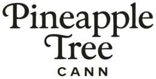
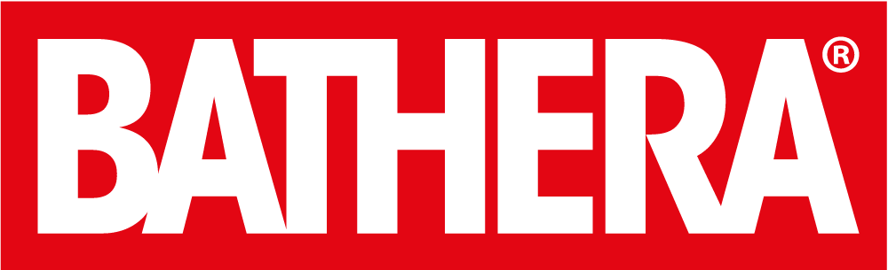

Rezept & Ablauf · 5 Min.
Cannabis-Rezept per Telemedizin: Vom Arztgespräch bis zur Lieferung
Wie Arztgespräch, Rezept und Lieferung über angebundene Telemedizin-Plattformen in einem Ablauf zusammenkommen.
Beitrag lesenNova Apotheke Langenseit 2022
Tagesaktueller Bestand, transparente Preise und pharmazeutische Beratung aus Langen. Noch kein Rezept? Über angebundene Telemedizin-Plattformen laufen Arztgespräch, Rezept und Lieferung in einem Ablauf.
Livebestand · tagesaktuell
Direkt aus unserem Apothekenbestand. Filtere nach Genetik, THC-Gehalt oder Behandlung – bestellt wird im Shop mit Deinem Rezept.
So geht's
Unser Shop ist direkt mit Telemedizin-Plattformen verbunden. Wird Dir dort Medizinalcannabis verordnet, kommt das Rezept automatisch bei uns an – ohne Upload und ohne Postweg.
Wähle eine angebundene Plattform und fülle den medizinischen Fragebogen aus – je nach Anbieter mit Videosprechstunde.
Verordnet Dir die Ärztin oder der Arzt Medizinalcannabis, wird das Rezept digital an die Nova Apotheke übermittelt.
Du schließt die Bestellung im Shop ab: Versand mit DHL und Sendungsnummer oder Abholung in Langen.
Du hast schon ein Rezept?
Lade Dein E-Rezept (QR-Code) oder Papierrezept im Shop hoch. Wir prüfen es, beraten Dich und liefern – oder Du holst ab.
Cannabisblüten verstehen
Die Genetik ist eine erste Orientierung, entscheidend für die Wirkung sind aber Wirkstoffgehalt und Terpenprofil. Wähle eine Gruppe, um den Livebestand direkt danach zu filtern.
Diese Angaben beruhen auf allgemeinen Informationen und Erfahrungsberichten und ersetzen keine ärztliche oder pharmazeutische Beratung. Die Therapieentscheidung trifft ausschließlich Deine Ärztin oder Dein Arzt.
Rechtslage · Stand Ende September 2026
Rund um Medizinalcannabis hat sich 2026 einiges bewegt. Hier der aktuelle Stand – wir aktualisieren ihn, sobald sich etwas ändert.
Geplante Gesetzesänderung Krankenkasse seit Juli 2026Kein Betäubungsmittel mehr. Medizinalcannabis wird seitdem auf einem normalen Rezept bzw. E-Rezept verordnet.
Kabinettsentwurf. Geplant sind Erstverordnungen nur nach persönlichem Arztkontakt und ein Versandverbot für Blüten. Der Botendienst von Apotheken bliebe erlaubt.
Blüten keine Kassenleistung mehr. Gesetzliche Krankenkassen zahlen seitdem keine Cannabisblüten. Privatrezepte sind davon nicht betroffen.
Noch nicht beschlossen. Der Entwurf zum Medizinal-Cannabisgesetz liegt im Gesundheitsausschuss des Bundestages. Telemedizin-Rezepte und Versand durch Apotheken sind weiterhin zulässig.
Extrakte · demnächst
Wir stellen gerade ein sorgfältig ausgewähltes Sortiment an Extrakten zusammen. Wenn wir Dich informieren sollen, sobald es losgeht, schreib uns kurz.
Benachrichtigung anfordernHersteller


Wissen & Forschung
Rezept, Kosten, Anwendung und Forschung – verständlich erklärt und mit Quellen belegt.
Rezept & Ablauf · 5 Min.
Wie Arztgespräch, Rezept und Lieferung über angebundene Telemedizin-Plattformen in einem Ablauf zusammenkommen.
Beitrag lesenProduktqualität · 4 Min.
Häufige Fragen
Deine Frage ist nicht dabei? Schreib uns an support@cannanova-langen.de oder ruf an: 06103 - 3748430.
Kontakt